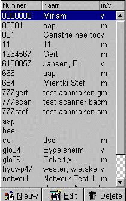
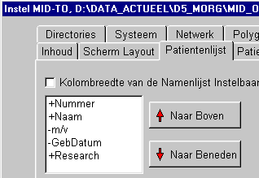
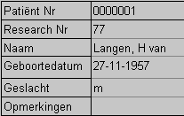
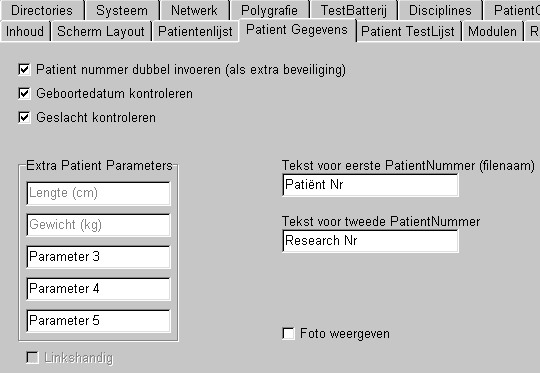
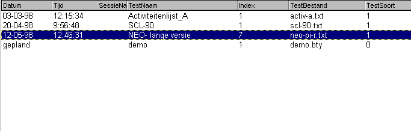
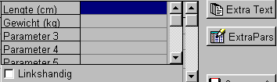
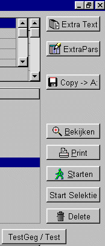
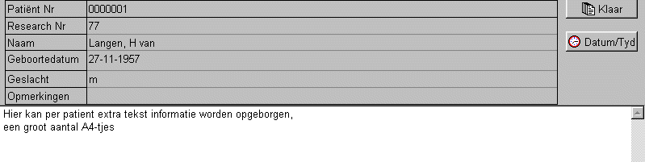

PatientGegevens
|
Dit is een lijst van alle ingevoerde patienten, gesorteerd op de eerste kolom. Door in deze lijst een regel (een patient) te selecteren, verschijnen rechts van deze lijst alle patient gegevens en de uitgevoerde (en eventueel geplande testen) die bij deze patient zijn afgenomen. Bij lange patientlijsten kan het selecteren worden versneld door de eerste letter van een patient in te toetsen. De knoppen onderaan de patientenlijst hebben betrekking op de patientenlijst. Nieuw : invoeren van een nieuwe patient Edit: het wijzigen van een reeds ingevoerde patient, dit ook direct geschieden door de gegevens van deze patient te klikken. Delete: het verwijderen van een patient. Via Instel / Patientenlijst / ... kunnen de gewenste kolommen en volgorde ervan in de patientenlijst worden ingesteld. |
 |
Instellen van de PatiëntenLijst
|
Dit venster is te bereiken via Instel / Patientenlijst / ... De onderwerpen die worden voorafgegaan door een '+' worden in de lijst opgenomen. Door te DUBBELKLIKKEN op een onderwerp wordt het onderwerp afwisselend in- of uitgeschakeld. Met de knoppen NAAR BOVEN/BENEDEN kan een geselekteerd onderwerp worden verplaatst. De KOLOMBREEDTE kan worden ingesteld in de header van de namenlijst de scheidingsstreep te slepen. Dit gaat uiteraard alleen als het aankruisvakje hierboven aangekruist is. |
 |
Hieronder staan de standaard patient-gegevens weergegeven.
|
 Via het instelvenster (rechts afgebeeld), kan de benaming voor de eerste twee velden worden gedefiniëerd. Beide velden worden afgedrukt in het rapport en opgenomen in het export-bestand. Belangrijk is echter te weten dat het eerste veld uniek moet zijn, omdat dit gebruikt wordt als sleutelwoord in de patienten database. |
 |
Het patientnummer moet een unieke string zijn, omdat deze als sleutelwoord in de database wordt gebruikt. Het programma kontroleert een nieuw ingevoerde patient.
Als extra controle (immers het achteraf wijzigen van een patientnummer is erg ingewikkeld) kan ingesteld worden dat een patientnummer tweemaal moet worden ingevoerd. Instellen via
Instellingen / Patientgegevens / Patientnummer dubbel invoeren
Voor een aantal testen is de leeftijd van de patient van belang, in die gevallen is het verstandig om de controle op een geldige geboortedatum aan te zetten. Instellen via
Instellingen / Patientgegevens / Geboortedatum kontroleren
Hetzelfde geldt voor het geslacht, instellen via
Instellingen / Patientgegevens / Geslacht kontroleren
De standaard patientgegevens kunnen worden gebruikt als kolommen in de patientenlijst. In te stellen via
Instellingen / Patientenlijst
De patienten testlijst zoals hieronder afgebeeld, bevat een overzicht van alle afgenomen en alle geplande testen van de betreffende patient.
De gewenste kolommen kunnen worden ingesteld via,
Instellingen / Patient Testlijst
De kolombreedte kan visueel worden ingesteld (mits vrijgegeven) door de kolom-scheidingslijn met de muis te verslepen.

Extra patientgegevens kunnen niet worden gebruikt in de kolommen van de patiëntenlijst.
Zodra er behoefte aan is, wordt deze tabel uitgebreid.
Momenteel zijn Lengte, Gewicht en Linkshandigheid als standaard parameters toegevoegd.
Daarnaast zijn er 3 parameters die door de gebruiker zelf gedefiniëerd kunnen worden.
In het menu Instellingen / Patient Gegevens / Extra Patient Parameters kunnen de extra parameters door de gebruiker worden gedefiniëerd. Eenmaal gedfiniëerd en gebruikt, dienen deze parameters niet meer gewijzigd te worden, daar de opslag niet op basis van de naam maar op basis van het veldnummer geschiedt.

Het zichtbaar zijn van de extra patient gegevens wordt standaard ingesteld via
Instel / Scherm Layout / Extra Patient Parameters
Daarnaast kan het al dan niet zichtbaar zijn worden getoggeld, middels de knop ExtraPars.
De knop ExrtraPars is op zijn beurt ook al dan niet zichtbaar te maken via
Instel / Scherm Layout / Knop Extra Parameters
Patient Gegevens, Extra Tekst
|
Met behulp van "Extra Text" kan per patient extra tekst worden opgeslagen, zoals hieronder is weergegeven. Het betreft gewone kale tekst. Met behulp van de knop Datum/Tijd kan op de plaats van de cursor de actuele dataum en tijd worden ingevuld. |
 |
